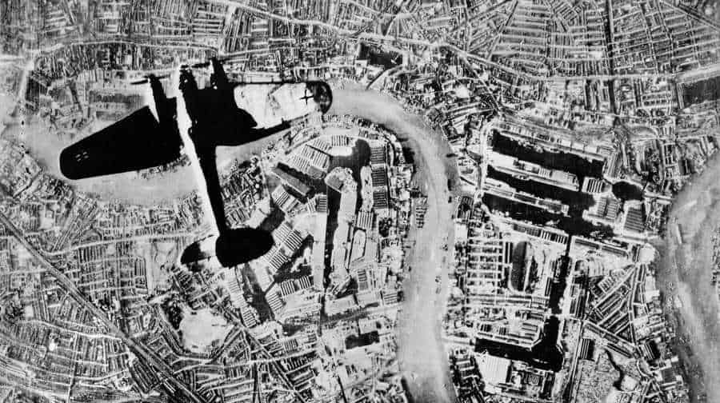
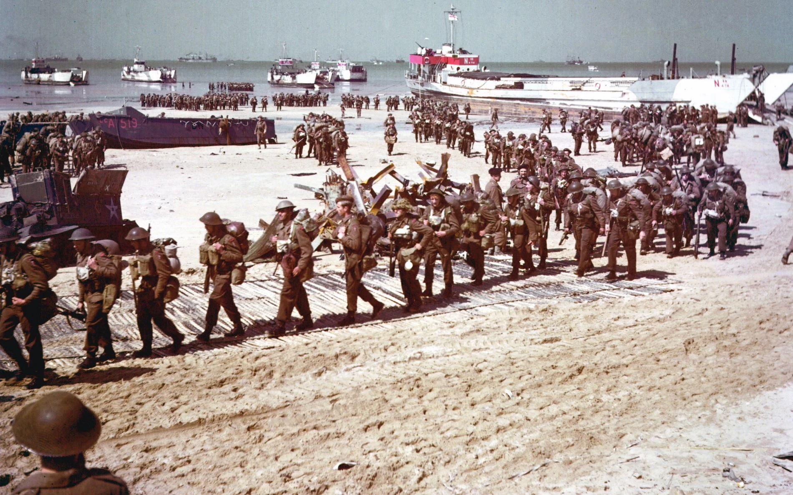

A Segunda Guerra Mundial foi um período crucial na história do Reino Unido, que desempenhou um papel fundamental como uma das principais potências aliadas. A guerra começou em setembro de 1939, quando a Alemanha nazista, sob o comando de Adolf Hitler, invadiu a Polônia. Diante dessa agressão, o Reino Unido e a França declararam guerra à Alemanha, marcando o início do conflito global.
A Blitz e a Batalha da Inglaterra
Em 1940, a Luftwaffe, a Força Aérea alemã, lançou uma série de ataques aéreos intensos sobre o Reino Unido, conhecidos como a Blitz. Cidades como Londres, Coventry e Liverpool sofreram bombardeios devastadores. A população britânica mostrou grande resiliência durante esse período, buscando abrigo nos abrigos durante os ataques e trabalhando para reconstruir suas cidades após os bombardeios.

A Batalha da Inglaterra foi um momento crucial da guerra, em que a Royal Air Force (RAF), a Força Aérea britânica, enfrentou a Luftwaffe em intensos combates aéreos. A determinação e a habilidade da RAF foram fundamentais para a derrota da Luftwaffe, e a Batalha da Inglaterra é considerada uma vitória crucial do Reino Unido sobre a Alemanha nazista.
A União com os Aliados
O Reino Unido trabalhou em estreita colaboração com outros países aliados para combater a ameaça nazista. O primeiro-ministro britânico, Winston Churchill, desempenhou um papel de liderança na coalizão dos Aliados. Sua eloquência e coragem inspiraram não apenas o povo britânico, mas também as nações aliadas em sua luta contra o Eixo, que era composto principalmente pela Alemanha, Itália e Japão.
Em 6 de junho de 1944, as forças aliadas lançaram a invasão da Normandia, também conhecida como o Dia D. Esse desembarque na costa francesa foi uma operação militar de grande envergadura e marcou o início da libertação da Europa ocupada pelos nazistas. O Reino Unido teve um papel crucial na operação, com soldados britânicos participando em grande número.

Em maio de 1945, a Alemanha finalmente se rendeu, marcando o fim da guerra na Europa. O Reino Unido, juntamente com os Aliados, celebrou a vitória contra o Eixo, mas também lamentou as imensas perdas humanas e os horrores da guerra.
Pós-Guerra e o legado
A Segunda Guerra Mundial teve um impacto duradouro no Reino Unido e em todo o mundo. O país emergiu da guerra com uma enorme dívida e teve que enfrentar desafios econômicos e sociais significativos na reconstrução pós-guerra. A guerra também levou ao declínio do Império Britânico e ao surgimento de um novo cenário geopolítico global, com o Reino Unido cedendo espaço às superpotências emergentes, como os Estados Unidos e a União Soviética.
No entanto, a Segunda Guerra Mundial também reforçou o sentimento de união e determinação do povo britânico. A resistência e a coragem demonstradas durante os ataques da Blitz e a Batalha da Inglaterra se tornaram símbolos da resistência britânica e de sua contribuição para a vitória dos Aliados na guerra.
A participação do Reino Unido na Segunda Guerra Mundial foi um momento crucial em sua história. O país enfrentou desafios difíceis, mas sua coragem, determinação e aliança com os Aliados foram fundamentais para a derrota do Eixo e a libertação da Europa ocupada. O legado da guerra continua a ser lembrado e celebrado, reforçando a importância da paz, da cooperação internacional e da busca por um mundo mais justo e livre de conflitos.